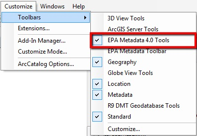
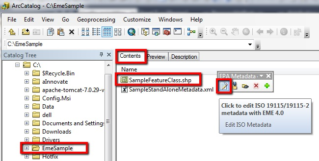
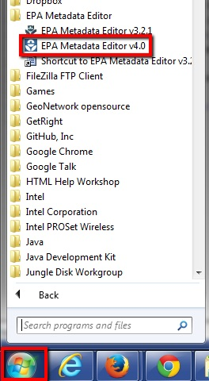

EPA Metadata Editor (EME)
Post-Installation Steps
When EME is initially installed, it can be helpful to take preliminary steps to customize key settings to meet your needs. An overview of post-installation steps is provided below.
Accessing the EPA Metadata Editor as an ArcGIS Add-In
- If you are using the EME as an ArcGIS Add-In, then it is accessed from within ArcCatalog. By default the Toolbar is visible after installation. If it is not visible within ArcCatalog, then open the EPA Metadata Editor Toolbar from the Customize->Toolbars menu.

- Once the EPA Metadata Toolbar is open, navigate to your directory or database of choice in the ArcCatalog table of contents.
- Select your data set or metadata record in the 'Contents' window in ArcCatalog.
- Click on the 'Edit ISO Metadata' button in the user interface. Please Note: For best results be sure to select a directory or geodatabase within the ArcCatalog table of contents, and then select the data set or file of interest in the 'Contents' window.

Accessing the EPA Metadata Editor as a Standalone Tool
If you are using the EME as a standalone application, then go to Start->EPA Metadata Editor to open EME.

Setting up the EME Database
When you first install EME, it can be helpful to set up the EME Database to ensure that the defaults match your specifications. Please see the help section titled 'Customizing the EPA Metadata Editor Database' for more information on configuring the EME database to meet your needs.